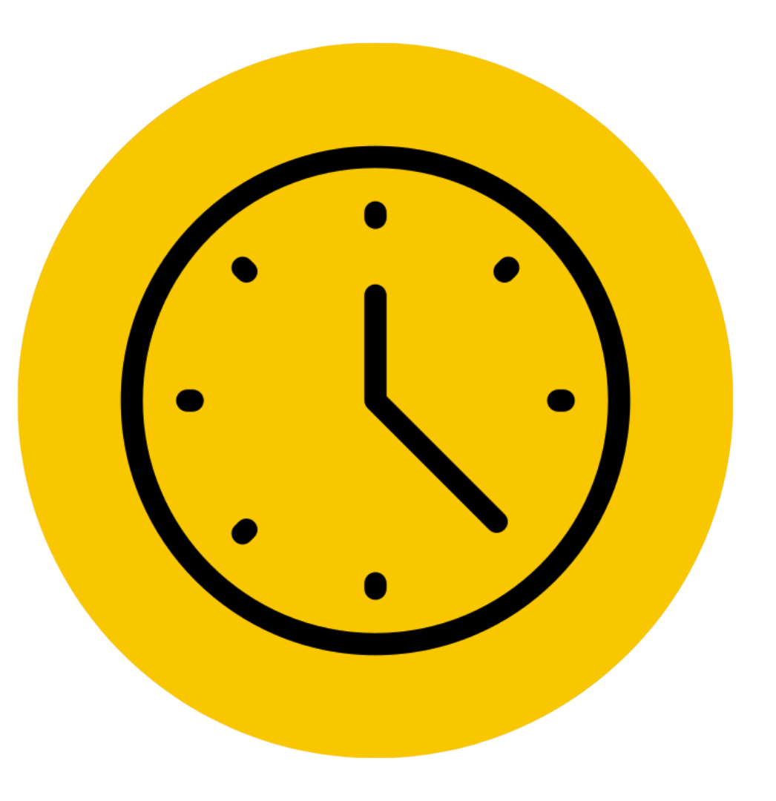
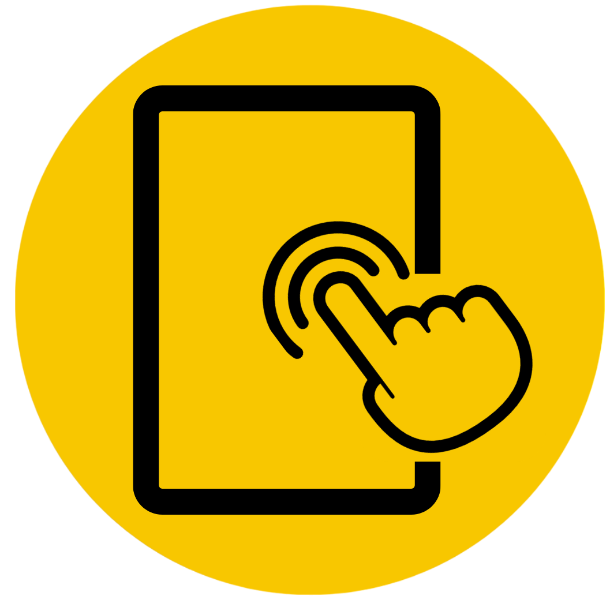

©2023-2025 TimeBi - Digital Time and Wellness Agency - La Chorrera - Panamá O. , Panamá | Avisos Legale | FAM


Time_Bi@Company.com
+507 1325-6589
MainStreet, Wonderland 654631


How we help
With the use of our app we intend to provide help to the problem faced by our youth in a world that coexists with technology in which it is very easy to fall into addictions if you are not careful about its use. For this reason and more Timebi is presented as an alternative that gives you the following benefits:


Improves self-awareness:
Being a process that you control yourself gives you the advantage of being able to adapt it to your liking and heal yourself without controls that do not help you.
Reduction of Digital
Addictions:
Addictions:
Effective Time
Management
Management
By setting limits and receiving reminders about your social media usage, TimeBi can assist in reducing digital addictions. It will help you avoid slipping into excessive and unhealthy app usage.
TimeBi helps you set and
manage time limits on social
media, enabling better control of your usage.
manage time limits on social
media, enabling better control of your usage.
Time for Hobbies
and Passions
and Passions
By reducing social media time, you can dedicate more time to hobbies and passions you love.
Mental Wellbeing
Anaging your social media time can reduce stress and anxiety associated with excessive use and social comparison.
Educational Value
TimeBi can help allocate time for educational content and
personal growth.
personal growth.
Enhanced
Productivity
Productivity
By reducing social media usage, you have more time and focus for productive tasks.
Family Bonding
Spending less time on social
media strengthens family bonds and fosters closer, more meaningful communication.


media strengthens family bonds and fosters closer, more meaningful communication.